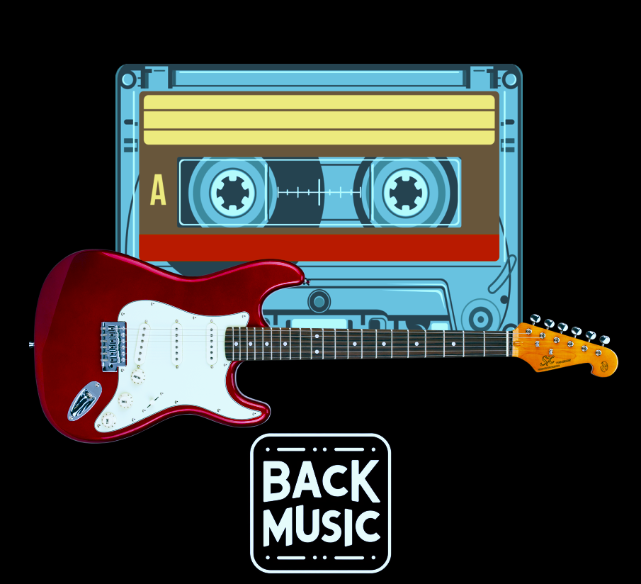

Buscador:
Cuenta:
Destacados:
Somos una pequeña tienda en el centro de Madrid, en el barrio
Chamartín, que quiere hacer el acceso a la música algo para
todos. Se puede disfrutar de nuestros servicios tanto online como en
la tienda, desde comprar instrumentos hasta poder venderlos y recibir
dinero para próximos descuentos en la tienda